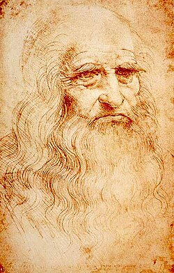

ლეონარდო და ვინჩი (იტალ. Leonardo da Vinci; დ. 15 აპრილი, 1452, ვინჩი, ფლორენციის რესპუბლიკა
(დღევანდელი იტალია) — გ. 2 მაისი, 1519, ამბუაზი, საფრანგეთის სამეფო) — აღორძინების ხანის იტალიელი
არქიტექტორი, მათემატიკოსი, მუსიკოსი, გამომგონებელი, ინჟინერი, ანატომი,
ბოტანიკოსი, მოქანდაკე, ბუნებისმეტყველი, გეოლოგი, მწერალი, კარტოგრაფი და მხატვარი.

ბიოგრაფია
ლეონარდო და ვინჩი დაიბადა 1452 წელს და გარდაიცვალა 1519 წელს. მომავალი გენიოსის მამა, პიერო და ვინჩი,
მდიდარი ნოტარიუსი და მიწათმფლობელი, ფლორენციაში ყველაზე ცნობილი ადამიანი იყო, ხოლო მისი დედა — კატერინა,
უბრალო ქალი იყო. ლეონარდო მათ უკანონოდ შეეძინათ; იგი ბავშვობიდანვე გატაცებული იყო ხატვით.
1466 წელს, 14 წლის ასაკში, ლეონარდო და ვინჩი საცხოვრებლად ფლორენციაში გადავიდა, სადაც მამამ სასწავლებლად სამხატვრო სახელოსნოში
— ანდრეა ვეროკიოს მიაბარა. 1466-1476 წლები ლეონარდომ ვეროკიოს სახელოსნოში გაატარა. 20 წლის ასაკში ის უკვე ჩამოყალიბებული მხატვარი
იყო. შეიძლება ითქვას, რომ ლეონარდო უმეტესწილად თავისით სწავლობდა.
1478 წელს მან საკუთარი სახელოსნო გახსნა.
1482 წელს ლეონარდო და ვინჩი ტოვებს ფლორენციას და საცხოვრებლად მილანში გადადის, რომელსაც იმ პერიოდში მართავდა
ლუდოვიკო მორო („მავრი“), სფორცას გვარის დიდებული. მან ლეონარდო, როგორც ხუროთმოძღვარი და მუსიკოსი, ისე მიიწვია.
მანვე დაავალა აკადემიის დაარსება, რომლისთვისაც ლეონარდომ დაწერა „ტრაქტატი ფერწერაზე“ — ყველა დროის მხატვართა სამაგიდო წიგნი.
მოროსგან ლეონარდო პირველ შეკვეთასაც იღებს: მან უნდა ააგოს დიდი ძეგლი ლუდოვიკოს მამისათვის — „ფრანჩესკო სფორცა“.
1499 წელს სფორცა ფრანგებმა მილანიდან განდევნეს და ლეონარდო იძულებული გახდა ქალაქი დაეტოვებინა. მომდევნო წლისათვის
უკვე ფლორენციაში ჩავიდა, სადაც, დაახლოებით, ექვსი წელი დაჰყო, მხოლოდ ათი თვით მიატოვა იგი პაპის კონდოტურის —
ჩეზარე ბორჯიას დავალებით, სიმაგრეების მშენებლობასთან დაკავშირებით. შემდეგ კვლავ მილანში დაბრუნდა.
მილანში მოღვაწეობის დროს ლეონარდო და ვინჩიმ შექმნა ერთ-ერთი საუკეთესო ფერწერული ტილო „მადონა ლიტა“. მსოფლიო
ხელოვნების უდიდესი ქმნილება „საიდუმლო სერობა“ (1496-1497), რომელიც აგრეთვე მილანში, „სანტა მარია დელა გრაციას“ მონასტრის ერთ-ერთ
კედელზეა დახატული. სურათზე არ იგრძნობა რელიგიური სიუჟეტებისათვის დამახასიათებელი სტატიურობა, ღვთიურობა. ლეონარდომ შეძლო
სრულიად განსხვავებული, ადამიანური განცდების მქონე სახეების აღბეჭდვა. ცნობილია, რომ მხატვარი დადიოდა მილანის ქუჩებსა და
სამიკიტნოებში, სწავლობდა ადამიანების სახეებს, ეს კი მას დიდ დროს ართმევდა. ფრესკა ტაძრის ნესტიან კედელზეა დახატული,
რის გამოც ძალიან დაზიანდა, 1954 წელს მოხდა მისი რესტავრაცია. სიცოცხლის ბოლო ორი ათწლეული ლეონარდო და ვინჩიმ
მოგზაურობაში გაატარა, რადგანაც ვერ პოულობდა ადგილს, სადაც საკუთარი თავის რეალიზებას შეძლებდა. 1513-დან 1519 წლამდე
გი მონაცვლეობით ცხოვრობდა რომში, პავიაში, ბოლონიასა და საფრანგეთში. 1506-1513 წლებში ლეონარდო კვლავ მილანშია, უკვე
ფრანგთა მეფის — ლუი XII-ის სამსახურში. საერთო ჯამში, მან 23 წელი დაჰყო მილანში.
ლეონარდოს ერთ-ერთი ბოლო ნამუშევარია „მონა ლიზას“ პორტრეტი, რომელიც საფრანგეთში ყოფნის დროს შექმნა და
„ჯოკონდას“
სახელითაა ცნობილი. სურათში
პორტრეტის იმდროინდელი ხატვის ტენდენცია სრულიად დარღვეულია, მონა ლიზა მუხლებამდეა დახატული, თითქმის მთელი
ტანით მაშინ, როდესაც პორტრეტებში ადამიანს მხოლოდ გულ-მკერდამდე ხატავდნენ.
1513-1514 წლებში ლეონარდო რომშია, სადაც პაპმა ლეო X-მ მიიწვია, 1516 წელს კი ფრანგთა მეფის, ფრანცისკ I-ის მიწვევით
ჩადის საფრანგეთში. მეფემ ლეონარდოს ამბუაზის მახლობლად მდებარე კლუს ციხე-სიმაგრე უბოძა. ლეონარდო და ვინჩი რამდენიმე
პროფესიას ფლობდა, იგი ერთდორულად მხატვარი, სკულპტორი, არქიტექტორი, მეცნიერი და ინჟინერი იყო.
ლეონარდო და ვინჩი 1519 წლის 2 მაისს გარდაიცვალა კლუს ციხე-სიმაგრეში. გადმოცემით, იგი ფლობდა დიდ ფიზიკურ ძალას.
მასზე ამბობდნენ რომ „ხელით თავისუფლად შეეძლო ცხენის ნალის გაღუნვა“.